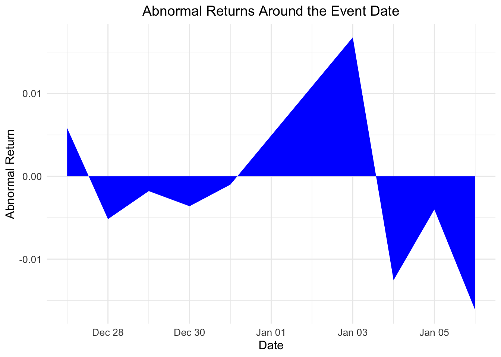

# Install the necessary packages if not already installed
if (!require(tidyquant)) install.packages("tidyquant")
if (!require(dplyr)) install.packages("dplyr")
if (!require(tidyr)) install.packages("tidyr")
if (!require(broom)) install.packages("broom")
if (!require(knitr)) install.packages("knitr")
if (!require(ggplot2)) install.packages("ggplot2")
if (!require(lubridate)) install.packages("lubridate")
# Load the packages
library(tidyquant)
library(dplyr)
library(tidyr)
library(broom)
library(knitr)
library(ggplot2)
library(lubridate)Cumulative Abnormal Returns
Introduction
In this document, we will extend the analysis from estimating the beta coefficient to measuring cumulative abnormal returns (CAR). CAR is used in event studies to assess the impact of a specific event on a stock’s price. We will first estimate the market model, calculate abnormal returns, and then compute the cumulative abnormal returns.
Setup
First, we need to install and load the required packages. Ensure you have `tidyquant`, `dplyr`, `broom`, `knitr`, `ggplot2`, and `lubridate` installed.
Data Collection and Manipulation
Data Download
We will download stock prices for a chosen stock (e.g., Apple Inc., ticker: AAPL) and a market index (e.g., S&P 500, ticker: ^GSPC) from Yahoo Finance during the estimation window 2020-2022. You can find any corresponding tickers that you would like to explore from its website.
# Define the tickers for the stock and the market index
stock_ticker <- "AAPL"
market_ticker <- "^GSPC"
# Set the time period for the data
start_date <- "2020-01-01"
end_date <- "2023-01-01"
# Download stock and market data
stock_data <- tq_get(stock_ticker, from = start_date, to = end_date)
market_data <- tq_get(market_ticker, from = start_date, to = end_date)Preview Data
Let’s take a look at the first few rows of the stock data in a pretty format.
# Print the head of the stock data in a pretty format
kable(head(stock_data), caption = "Stock Data: Apple Inc. (AAPL)")| symbol | date | open | high | low | close | volume | adjusted |
|---|---|---|---|---|---|---|---|
| AAPL | 2020-01-02 | 74.0600 | 75.1500 | 73.7975 | 75.0875 | 135480400 | 72.96047 |
| AAPL | 2020-01-03 | 74.2875 | 75.1450 | 74.1250 | 74.3575 | 146322800 | 72.25114 |
| AAPL | 2020-01-06 | 73.4475 | 74.9900 | 73.1875 | 74.9500 | 118387200 | 72.82685 |
| AAPL | 2020-01-07 | 74.9600 | 75.2250 | 74.3700 | 74.5975 | 108872000 | 72.48436 |
| AAPL | 2020-01-08 | 74.2900 | 76.1100 | 74.2900 | 75.7975 | 132079200 | 73.65035 |
| AAPL | 2020-01-09 | 76.8100 | 77.6075 | 76.5500 | 77.4075 | 170108400 | 75.21473 |
Data Preparation
Next, we will prepare the data by calculating daily returns for both the stock and the market index.
# Calculate daily returns for the stock and the market
stock_returns <- stock_data %>%
tq_transmute(select = adjusted,
mutate_fun = periodReturn,
period = "daily",
col_rename = "stock_return")
market_returns <- market_data %>%
tq_transmute(select = adjusted,
mutate_fun = periodReturn,
period = "daily",
col_rename = "market_return")
# Combine the returns data into one data frame
returns_data <- left_join(stock_returns,
market_returns,
by = "date") %>%
na.omit()Estimating the Market Model
The market model is a statistical model that describes the relationship between the returns of a stock and the returns of the overall market. We will perform a linear regression of the stock returns on the market returns to estimate the beta coefficient.
# Perform the linear regression
model <- lm(stock_return ~ market_return, data = returns_data)
# Display the summary of the regression model
summary(model)
Call:
lm(formula = stock_return ~ market_return, data = returns_data)
Residuals:
Min 1Q Median 3Q Max
-0.047270 -0.007389 -0.000531 0.005993 0.094905
Coefficients:
Estimate Std. Error t value Pr(>|t|)
(Intercept) 0.0006081 0.0004786 1.271 0.204
market_return 1.1962625 0.0298684 40.051 <2e-16 ***
---
Signif. codes: 0 '***' 0.001 '**' 0.01 '*' 0.05 '.' 0.1 ' ' 1
Residual standard error: 0.01316 on 754 degrees of freedom
Multiple R-squared: 0.6802, Adjusted R-squared: 0.6798
F-statistic: 1604 on 1 and 754 DF, p-value: < 2.2e-16# Extract the beta and alpha coefficients
coefficients <- tidy(model) %>%
filter(term %in% c("(Intercept)", "market_return")) %>%
select(term, estimate) %>%
spread(term, estimate)
alpha_hat <- coefficients$`(Intercept)`
beta_hat <- coefficients$market_return
cat("The estimated alpha for", stock_ticker, "is", round(alpha_hat, 2), "\n")The estimated alpha for AAPL is 0 cat("The estimated beta for", stock_ticker, "is", round(beta_hat, 2))The estimated beta for AAPL is 1.2Calculating Abnormal Returns
Abnormal returns are the difference between the actual returns and the returns predicted by the market model.
# Calculate the predicted returns
returns_data <- returns_data %>%
mutate(predicted_return = alpha_hat + beta_hat * market_return)
# Calculate the abnormal returns
returns_data <- returns_data %>%
mutate(abnormal_return = stock_return - predicted_return)
# Display the first few rows with abnormal returns
kable(head(returns_data), caption = "Returns Data with Abnormal Returns")| date | stock_return | market_return | predicted_return | abnormal_return |
|---|---|---|---|---|
| 2020-01-02 | 0.0000000 | 0.0000000 | 0.0006081 | -0.0006081 |
| 2020-01-03 | -0.0097222 | -0.0070599 | -0.0078374 | -0.0018848 |
| 2020-01-06 | 0.0079682 | 0.0035334 | 0.0048349 | 0.0031333 |
| 2020-01-07 | -0.0047028 | -0.0028032 | -0.0027453 | -0.0019575 |
| 2020-01-08 | 0.0160861 | 0.0049025 | 0.0064727 | 0.0096134 |
| 2020-01-09 | 0.0212406 | 0.0066553 | 0.0085695 | 0.0126711 |
Measuring Cumulative Abnormal Returns (CAR)
Cumulative abnormal returns (CAR) are the sum of abnormal returns over a specified event window. We need to define an event date and the event window around this date.
# Define the event date and the event window
event_date <- ymd("2022-01-01")
event_window <- 5 # Days before and after the event date
# Filter the returns data for the event window
event_window_data <- returns_data %>%
filter(date >= event_date - event_window &
date <= event_date + event_window)
# Calculate the cumulative abnormal returns (CAR)
car <- sum(event_window_data$abnormal_return)
# Display the cumulative abnormal returns
cat("The cumulative abnormal returns (CAR) for the event window around",
as.character(event_date), "is", round(car, 4))The cumulative abnormal returns (CAR) for the event window around 2022-01-01 is -0.0217Visualizing Abnormal Returns
We will visualize the abnormal returns around the event window.
# Plot the abnormal returns using ggplot2
ggplot(event_window_data, aes(x = date, y = abnormal_return)) +
geom_area(stat = "identity", fill = "blue") +
labs(title = "Abnormal Returns Around the Event Date",
x = "Date",
y = "Abnormal Return") +
theme_minimal() +
theme(plot.title = element_text(hjust = 0.5, size = 14),
axis.title = element_text(size = 12),
axis.text = element_text(size = 10))
Conclusion
In this document, we extended the analysis from estimating the beta coefficient to measuring cumulative abnormal returns (CAR). We estimated the market model, calculated abnormal returns, and computed the CAR for a specified event window. CAR is a useful measure in event studies to assess the impact of specific events on a stock’s price.